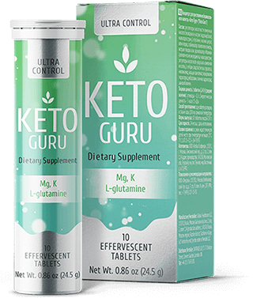

Le régime cétogène sans restriction. Comment est-ce
possible ?
Mode
5 COMMENTAIRES
PARTAGER
5
Une tendance populaire ou une technique efficace ?
Qu'est-ce le régime cétogène ?
Notre infatigable rédactrice en chef, Nathalie Nox, a examiné tous les
aspects de cette méthode de perte de poids, en a trouvé les avantages et les inconvénients
et découvert comment améliorer l'efficacité du régime сétogène.

But : perdre du poids en 2 mois
Résultat : moins 17 kg sans œdème ni vergetures

après


J'ai voulu faire deux choses d'un seul coup - mincir avant l'été
et rédiger un article remarquable. Alors, qu'est-ce réellement qu'un régime cétogène ?
Il s'agît d'un régime pauvre en glucides, composé principalement
de graisses et de quantités modérées de protéines. Pour le dire simplement, vous ne pouvez pas manger vos plats préférés !
Pas de bonbons, ni de pâtisseries, ni de pommes de terre. La restauration rapide devient
votre principale ennemie. Cependant, vous pouvez manger beaucoup de viande, que vous
commencez à détester dès le troisième jour.
Les glucides donnent de l'énergie à notre corps. Lorsque votre corps en manque, il commence à brûler ses propres graisses pour obtenir de l'énergie.
Ceci s'appelle la cétose. En même temps, les tissus protéiques restent intacts tout en
conservant vos muscles. Comment a été ma propre expérience ?
J'ai arrêté de manger des bonbons et des petits
pains.
Mon régime alimentaire comprenait de la viande, du fromage, du fromage cottage, des légumes et des œufs.
Tout cela sonne bien, mais j'ai commencé à ressentir les conséquences d'un taux bas de
glucides dès 3 jours.
Il m'était difficile de me réveiller le matin. Je n'avais pas
d'énergie. Même mon cerveau fonctionnait plus lentement que jamais.

J'ai perdu 4 kg en huit jours, ce qui était un bon
résultat. Mais j'ai commencé à avoir des problèmes de reins. Mes reins étaient tout
simplement incapables de traiter d'énormes quantités de protéines que je mangeais au
lieu de glucides. J'avais vraiment peur et j'ai décidé de m'arrêter.
Ma publication devait être prête le mois suivant et mon expérience
a quasiment échoué. Pour faire face à la situation, j’ai appelé une amie à moi, qui est
diététicienne. Elle m'a parlé du produit qui pourrait aider à éviter de supprimer les glucides de mon alimentation.
Ces composants aident vos organes internes à s'adapter à votre nouveau régime et améliorent le fonctionnement de votre cerveau pendant la cétose.
Les vitamines et les minéraux améliorent l'endurance et réduisent la fatigue. Mais le
plus important est ce que la prise de vous permet de manger des glucides. Mangez votre nourriture préférée tout en mincissant !
Avec modération, bien sûr.



Je peux certainement dire que mon expérience a réussi. J'ai perdu
du poids et rafraîchi ma garde-robe. Maintenant, je porte des robes, des pantalons et des
mini-jupes moulants comme le permet ma nouvelle silhouette. Et elle sera encore plus mince
avant l'été.
À toutes celles qui ont essayé de perdre du poids avec le régime Keto ou qui ont juste l'intention de le faire, je recommande fortement d'acheter . L'effet sera plus
visible et votre corps en meilleure santé. Toutefois, il ne faut pas en abuser car votre
corps pourrait commencer à brûler uniquement de la graisse, ce qui peut finir par provoquer
une anorexie. Bonne chance et je vous souhaite à toutes de retrouver votre silhouette élancée !
Commentaires :
Marie
J'ai réussi à suivre le régime Keto pendant seulement deux
jours. IL est vraiment difficile de vivre sans glucides. Et faire des exercices est
complètement hors de question. Ce régime ne me convient pas.
répondre


Annie04
J'ai utilisé pour mincir après l'accouchement. Au début, j’ai
essayé le régime cétogène, mais cela n’a pas marché. J'étais terriblement fatiguée et je
ne pouvais pas prendre soin de mon bébé correctement. Quand j'ai essayé Je suis
devenue plus énergique. C'est vrai que j'ai arrêté les bonbons, mais je m'y suis
habituée rapidement. J'ai perdu 14 kg, alors n'hésitez pas à l'essayer.
répondre
POSTS RECENTS

10 régimes les plus efficaces pour mincir rapidement

Pour te rendre jalouse : 6 jours de la vie d'une rédactrice
d'un magazine de mode (et de son assistante personnelle)

Horoscope pour les femmes réussies du 28 janvier au 3 février
Mon histoire de perte de poids. Sans danger et ultra efficace
TAGS POPULAIRES
conseils
idées
inspiration
moderne
motivation
trucs et astuces
tutoriel
promenades
@copyright 2019